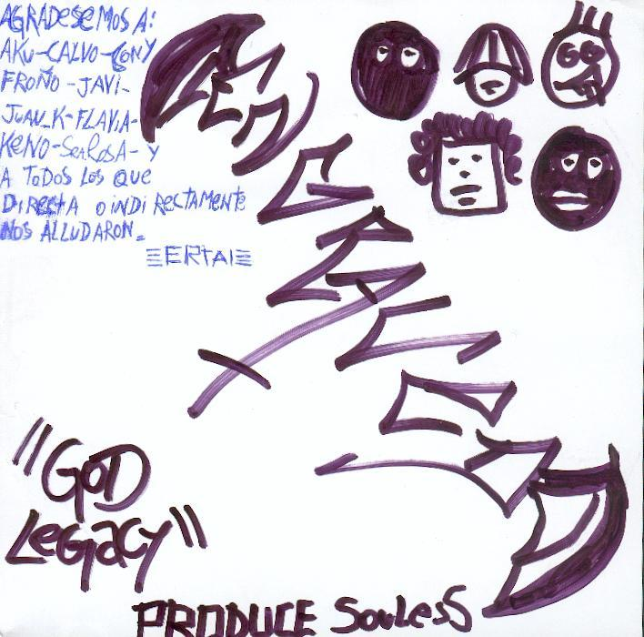

God Legacy

Track list:
-Death - Zombie Ritual (Cover por EngraveD)
-Death - Spirit Crusher (Cover por EngraveD)
-Death - Pull The Plug (Cover por EngraveD)
-Megadeth - Symphony of Destruction (Cover por EngraveD)
-Kreator - Tormentor (Cover por EngraveD) (version 1)
-Kreator - Tormentor (Cover por EngraveD) (version 2)
Descripcion:
Bueno... este es el primer cd de EngraveD... no es algo para estar totalmente orgulloso.. ya que la calidad de gravacion debido a falta de recursos economicos no era mi wena (era bastante mala... un microfono de pc colgao del techo) ... pero superaba a la gravadora de chiki que fue donde primero engraved hacia sus grabaciones.
Cuando compres (que crei que era gratis?? dohh!!) este demo te podras dar cuenta del enorme poder de la bateria por sobre todo los otros sonidos ahciendo que la cancion sea una mierda y que tengai que hacer un gran esfuerzo por escuchar un poco las guitarras, el bajo y la voz. Debido a esto ahora se discute la posibilidad de que negro sucio se tenga que ir con la bateria al pasillo pa que no meta tanto ruido (ojala sea asi).
Extrañamente al final de cada cancion se empieza a escuchar la voz de pablo (negro sucio) diciendo algunos insultos y un PELAYA que se comienza a hacer molesto despues de escucharloi muchas veces aunque solo sea una grabacion (tendre que tomar mi venganza).. desgraciadamente al demo no se le pudieronle poner toas las canciones ya que "slaughter of the soul" de at the gates no se alcanzo a grabar y "blinded by fear" del mismo grupo no se pudo grabar al cd extrañamente a pesar de haber tao en el pc .. :(.... el cd aparte de las canciones tocadas por el grupo tiene algunas de relleno que le aggregan algo de valor al cd y hacen que al comprarlo no sea una total perdida de plata.....
El punto esque este cd pudo haber sido mucho mejor .. pero por falta de tiempo y de medios de transporte y por problemas tecnicos (podras notar muchos pelayas1 y detalles idiotas en todas las canciones,.... otro de estos problemas tecnicos importantes fue la falla de mi cable que hizo que grande y juerte tuviera compasion por el chico y cuadrao prestando su cable para que la wea de guitarra sonara con un poco de distorcion y no como gameboy... desgraciadamente grande y fuerte al hacer este gesto de bondad no pudo aparecer en la gravaciion de pull the plug... pero mas tarde nos dimos cuenta de que si podia tocar usando mi cable malo.. ya que el bajo no nesecita distorcion.. con esto pudo seguir tocando mi negro rico ) que frueron solucionados tardiamente nose pudo hacer mejor.... (PERO NO!! ENGRAVED!!)
Agradecemos a toda la gente involucrada colaborando en la produccion de god legacy directa e indirectamente,... aku, kalvo, cony, froño, javi, juan_k,sra rosa, flavia, keno, un agradecimiento especial a carlos (que fue el responsable de la eliminacion de la mejor version de symphony of destruction que hayamois hecho en nuestra vidas.. casi un milagro y que no lo matamos noma porque ayudo a grabar toas las otras canciones.. grax ) y a los que ayudaron y no apareces. ... el demo fue grabado en la haus de verguis en la fecha creo que de algun jueves de quien sabra que numero en septiembre parece antes de que verguis viajara a miami por 2 weeks.. de donde volvio igual de hermoso y bello....
Ahora si leiste esto despues de "comprar" el demo entonces ya sabes los motivos por los cuales desperdiciaste tu plata conformate mierda! (considerate estafado)...
SI CREEN QUE NADA PUEDE SER PEOR ESPEREN AA NUESTRO PROX DEMO, ENGRAVED!!!!!
Viernes, 29 de octubre de 2004
Comentario por pelaya, chikips(picaron) y verga